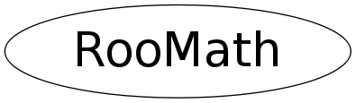

Function Members (Methods)
public:
private:
| static const char* | cacheFileName() |
| static void | initFastCERF(Int_t reBins = 800, Double_t reMin = -4.0, Double_t reMax = 4.0, Int_t imBins = 1000, Double_t imMin = -4.0, Double_t imMax = 6.0) |
| static Bool_t | loadCache() |
| static void | storeCache() |
Data Members
private:
| static Bool_t | _cacheTable | Switch activating use of file cache for CERF-LUT |
| static Int_t | _imBins | Number of grid points in imaginary dimension of CERF-LUT |
| static double** | _imCerfArray | Lookup table for Im part of complex error function |
| static Double_t | _imMax | High edge of imaginary dimension of CERF-LUT |
| static Double_t | _imMin | Low edge of imaginary dimension of CERF-LUT |
| static Double_t | _imRange | Range in imaginary dimension of CERF-LUT |
| static Double_t | _imStep | Grid spacing in imaginary dimension of CERF-LUT |
| static Int_t | _reBins | Number of grid points in real dimension of CERF-LUT |
| static double** | _reCerfArray | Lookup table for Re part of complex error function |
| static Double_t | _reMax | High edge of real dimension of CERF-LUT |
| static Double_t | _reMin | Low edge of real dimension of CERF-LUT |
| static Double_t | _reRange | Range in real dimension of CERF-LUT |
| static Double_t | _reStep | Grid spacing in real dimension of CERF-LUT |
Class Charts
{kind=link}
{kind=link}
{kind=link}
{kind=link}

Function documentation
RooComplex FastComplexErrFunc(const RooComplex& z)
Double_t FastComplexErrFuncRe(const RooComplex& z)
Double_t FastComplexErrFuncIm(const RooComplex& z)
RooComplex ComplexErrFunc(Double_t re, Double_t im = 0)
Return CERNlib complex error function for Z(re,im)
RooComplex ComplexErrFunc(const RooComplex& z)
Return CERNlib complex error function This code is translated from the fortran version in the CERN mathlib. (see ftp://asisftp.cern.ch/cernlib/share/pro/src/mathlib/gen/c/cwerf64.F)
void initFastCERF(Int_t reBins = 800, Double_t reMin = -4.0, Double_t reMax = 4.0, Int_t imBins = 1000, Double_t imMin = -4.0, Double_t imMax = 6.0)
Allocate and initialize lookup table for interpolated complex error function for given grid parameters
void cleanup()
RooComplex ITPComplexErrFunc(const RooComplex& z, Int_t nOrder)
Return complex error function interpolated from lookup tabel created by initFastCERF(). Interpolation is performed in Im and Re plane to specified order.
Double_t ITPComplexErrFuncRe(const RooComplex& z, Int_t nOrder)
Return real component of complex error function interpolated from lookup table created by initFastCERF(). Interpolation is performed in Im and Re plane to specified order. This functions is noticably faster than ITPComplexErrrFunc().re() because only the real lookup table is interpolated
Double_t ITPComplexErrFuncIm(const RooComplex& z, Int_t nOrder)
Return real component of complex error function interpolated from lookup table created by initFastCERF(). Interpolation is performed in Im and Re plane to specified order. This functions is noticably faster than ITPComplexErrrFunc().im() because only the imaginary lookup table is interpolated
Double_t interpolate(Double_t* yArr, Int_t nOrder, Double_t x)
Interpolate array 'ya' with 'n' elements for 'x' (between 0 and 'n'-1)
Double_t interpolate(Double_t* xa, Double_t* ya, Int_t n, Double_t x)
Interpolate array 'ya' with 'n' elements for 'xa'